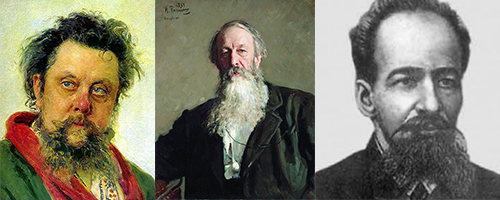

Instrumentación
Clase 013

Instrumentos Musicales, su rango y transposición
(Diferentes fuentes)
Orquestas triples, pares y de salón
Sinfonía n º 5, I Mov.
Gustav Mahler
Cornos franceses
Cuadros de una Exposición
Modest Músorgski

Músorgski / Stasov / Hartmann
Orquestación de Maurice Ravel
“Pedro y el Lobo”
013